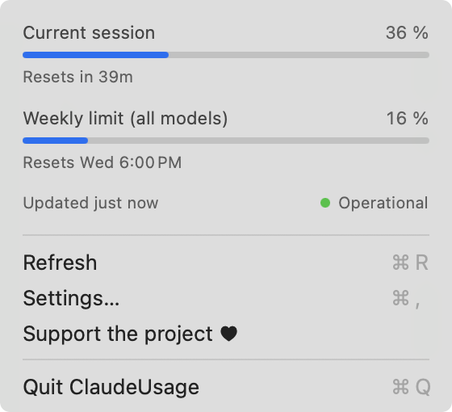

Your Claude Code usage,
in the Mac menu bar.
See your session and weekly limits at a glance, with no password prompts and no tokens used.
curl -fsSL https://raw.githubusercontent.com/Throover/ClaudeUsage/main/install.sh | sh
No password prompts
The app never reads your keychain or your sign-in token. It asks Claude Code itself, by running /usage.
No tokens used
In our tests, checking your usage used 0 tokens and made no model call.
Session and weekly limits
The 5-hour session window, the weekly limit and when each one resets, refreshed every 5 minutes.
A line in your terminal
Optionally, your usage under the Claude Code prompt, with your keyboard hints still visible.